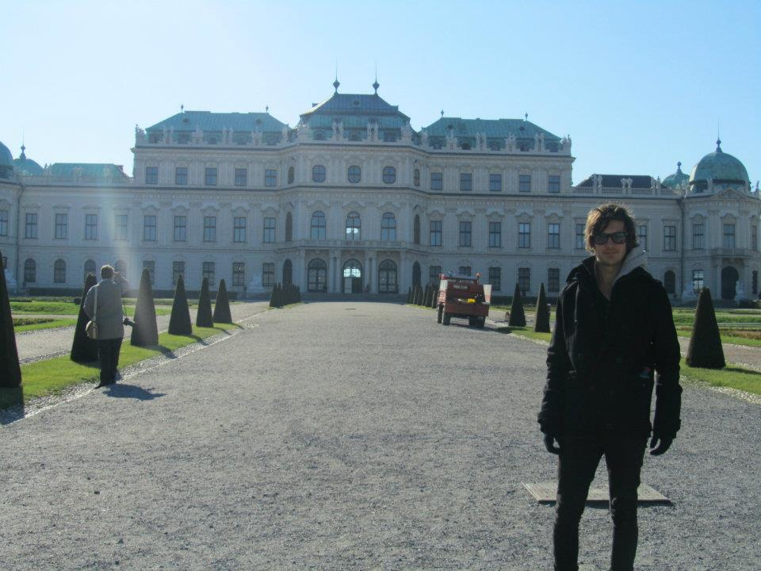

Vienna
What to See
Vienna is renowned for its imperial palaces and vibrant cultural scene. Key sights include Schönbrunn Palace, Hofburg Palace, St. Stephen's Cathedral, Belvedere Palace, and the Vienna State Opera.
A Brief History of the City
Vienna has been a major center of culture, politics, and economics in Europe for centuries. It was the capital of the Austro-Hungarian Empire and played a pivotal role in the development of classical music, art, and architecture.
Top 10 Attractions
- Schönbrunn Palace
- Hofburg Palace
- St. Stephen's Cathedral
- Belvedere Palace
- Vienna State Opera
- Kunsthistorisches Museum
- Prater Amusement Park
- Albertina Museum
- Naschmarkt
- Hundertwasserhaus
What to Bring
- Comfortable walking shoes
- Weather-appropriate clothing
- Camera or smartphone for photos
- Guidebook or map
- Travel adapter (Type F socket)
- Reusable water bottle
- Personal medications
- Light jacket for cooler evenings
- Umbrella or raincoat
- Basic German phrases
Currency
The currency in Vienna is the Euro (€).
Best Time to Visit
Spring (April to June) and Autumn (September to October) offer mild weather and fewer tourists. Summer is vibrant with outdoor concerts and festivals, while winter is perfect for enjoying Vienna's festive Christmas markets.
Fun Facts
- Vienna is home to the world's oldest zoo, Tiergarten Schönbrunn, established in 1752.
- The city has a rich musical heritage, being the home of famous composers like Mozart, Beethoven, and Strauss.
- The Vienna Boys' Choir is one of the most renowned choirs in the world.
- Vienna consistently ranks among the world's most livable cities.
- The city hosts the annual Vienna Film Festival, attracting filmmakers and cinephiles globally.